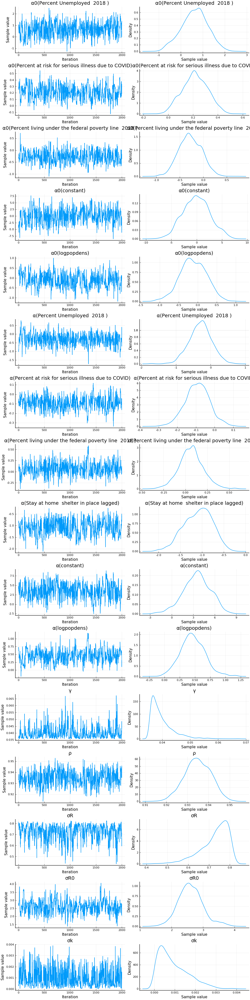
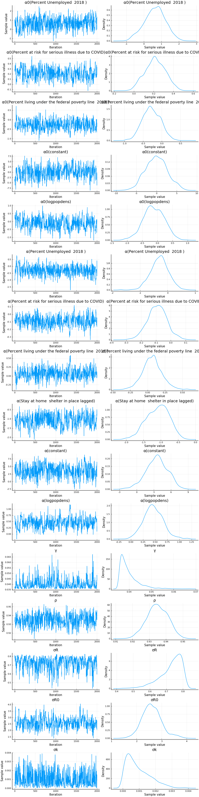

Results
## data prep
using CovidData
Error: importing CovidData into Main conflicts with an existing identifier
using CovidRt
Error: importing CovidRt into Main conflicts with an existing identifier
using TransformVariables, Parameters, Plots, StatsPlots, DataFrames, Dates, LinearAlgebra, Distributions, Random, LogDensityProblems, DynamicHMC, MCMCChains, JLD2, Latexify
Plots.pyplot()
df = CovidData.statedata(policies=:indicators, fillmissingmobility=true)
df[!,:log_encounters_rate] = log.(1 .+ df[!,:encounters_rate])
pvars = [Symbol("Stay.at.home..shelter.in.place"),
Symbol("State.of.emergency"),
Symbol("Date.closed.K.12.schools"),
Symbol("Closed.gyms"),
Symbol("Closed.movie.theaters"),
Symbol("Closed.day.cares"),
Symbol("Date.banned.visitors.to.nursing.homes"),
Symbol("Closed.non.essential.businesses"),
Symbol("Closed.restaurants.except.take.out")]
mvars = [:retail_and_recreation_percent_change_from_baseline,
:grocery_and_pharmacy_percent_change_from_baseline,
:parks_percent_change_from_baseline ,
:transit_stations_percent_change_from_baseline,
:workplaces_percent_change_from_baseline,
:residential_percent_change_from_baseline,
:percentchangehours,
:percentchangebusinesses,
:daily_distance_diff,
:daily_visitation_diff,
:log_encounters_rate]
df[!,:logpopdens] = log.(df[!,Symbol("Population.density.per.square.miles")])
df[!,:weekend] = dayofweek.(df[!,:date]) .>= 6
x0vars=[:constant, :logpopdens,
Symbol("Percent.Unemployed..2018."),
Symbol("Percent.living.under.the.federal.poverty.line..2018."),
Symbol("Percent.at.risk.for.serious.illness.due.to.COVID")]
sdf = filter(x->x.fips<60, df)
sdf = sort(sdf, (:state, :date))
sdf[!,mvars] ./= 100
sdf[!,:constant] .= 1
2845-element Array{Int64,1}:
1
1
1
1
1
1
1
1
1
1
⋮
1
1
1
1
1
1
1
1
1
Here, we will allow the initial and time varying mean of $R_{s,t}$ to
depend on covariates. We will include only the policy related covariates
and the non time-varying ones.
In computing $\Delta \log \Delta C$, we take backward differences of
length 7, so
This means that our time $t$ outcome is reflects the average
reproductive number from time $t-7$ to $t$. For $X_{s,t}$ we use the
moving average of the policy indicator variables from time $t-7-L$ to
$t-14-L$, and we try a few different values of $L$.
reestimate=true
xvarsets = [ vcat(x0vars,
Symbol("Stay.at.home..shelter.in.place_lagged"),
Symbol("Date.closed.K.12.schools_lagged"),
Symbol("Closed.movie.theaters_lagged"),
Symbol("Closed.non.essential.businesses_lagged"),
Symbol("Closed.restaurants.except.take.out_lagged")) ,
vcat(x0vars,
Symbol("Stay.at.home..shelter.in.place_lagged")) ]
rlo=-1
rhi=1.1
states_to_plot = ["New York", "New Jersey","Massachusetts","California",
"Georgia","Illinois","Michigan",
"Ohio","Wisconsin","Washington"]
warmup = default_warmup_stages(local_optimization=FindLocalOptimum(1e-4, 100),
stepsize_search=nothing,
init_steps=100, middle_steps=100,
terminating_steps=2*100,
doubling_stages=4, M=Symmetric)
for L in [0, 7]
for xvars in xvarsets
K = length(xvars)
priors = (γ = truncated(Normal(1/7,1/7), 1/28, 1/1),
σR0 = truncated(Normal(1, 3), 0, Inf),
α0 = MvNormal(zeros(length(x0vars)), sqrt(10)), #truncated(Normal(1, 3), 0, Inf),
σR = truncated(Normal(0.25,1),0,Inf),
σk = truncated(Normal(0.1, 5), 0, Inf),
ρ = Uniform(rlo, rhi),
α = MvNormal(zeros(K), sqrt(10))
)
estfile = "rt_onlyp_$(L)_x$(K).jld2"
w = vcat(ones(7), zeros(1+2*L+7))
sort!(sdf, (:state, :date))
for v in pvars
newv = Symbol(string(v)*"_lagged")
sdf[!,newv] = Float64.(sdf[!,v])
for gdf in groupby(sdf, :state)
gdf[:, newv] .= CovidRt.smooth(gdf[:,v], w=w)
end
end
mdl = CovidRt.RtModel(sdf, Symbol("cases.nyt"), xvars, x0vars,
priors; L1=7, L2=7,
time0=r->(r[Symbol("cases.nyt")].>=5))
if !isfile(estfile) || reestimate
post = CovidRt.mcmc(mdl; iterations=2000, warmup=warmup)
@save estfile post
end
@load estfile post
cc = CovidRt.MCMCChain(post, xvars, x0vars)
println("## Policies lagged by = $(L)")
println()
display(plot(cc))
println(latexify(DataFrame(describe(cc)[1]), env=:mdtable, latex=false, fmt=x->round(x, sigdigits=3)))
println(latexify(DataFrame(describe(cc)[2]), env=:mdtable, latex=false, fmt=x->round(x, sigdigits=3)))
states = mdl.id
S = length(states_to_plot)
figs = fill(plot(), S)
for (i,st) in enumerate(states_to_plot)
s = findfirst(states.==st)
figr = CovidRt.plotpostr(mdl.t[s],mdl.dlogk[s],post, mdl.X[s], mdl.X0[s])
l = @layout [a{.1h}; grid(1,1)]
figs[i] = plot(plot(annotation=(0.5,0.5, st*", L=$(L) nx=$(K)"), framestyle = :none),
plot(figr, ylim=(-1,15)), layout=l)
display(figs[i])
end
end
end
Policies lagged by = 0
| parameters |
mean |
std |
naive_se |
mcse |
ess |
r_hat |
| γ |
0.0387 |
0.00296 |
6.62e-5 |
0.000227 |
210.0 |
1.0 |
| σR0 |
2.56 |
0.304 |
0.00681 |
0.0237 |
163.0 |
1.0 |
| α0(constant) |
0.397 |
2.75 |
0.0616 |
0.214 |
122.0 |
1.0 |
| α0(logpopdens) |
-0.0609 |
0.342 |
0.00764 |
0.0317 |
103.0 |
1.02 |
| α0(Percent Unemployed 2018 ) |
0.357 |
0.551 |
0.0123 |
0.0552 |
64.9 |
1.0 |
| α0(Percent living under the federal poverty line 2018 ) |
-0.284 |
0.25 |
0.0056 |
0.0218 |
128.0 |
1.0 |
| α0(Percent at risk for serious illness due to COVID) |
0.236 |
0.102 |
0.00229 |
0.00775 |
123.0 |
1.0 |
| σR |
0.744 |
0.0517 |
0.00116 |
0.00389 |
211.0 |
1.0 |
| σk |
0.000889 |
0.000694 |
1.55e-5 |
6.91e-5 |
93.4 |
1.0 |
| ρ |
0.937 |
0.00636 |
0.000142 |
0.000469 |
169.0 |
1.0 |
| α(constant) |
3.26 |
1.84 |
0.0412 |
0.166 |
112.0 |
1.01 |
| α(logpopdens) |
0.456 |
0.192 |
0.0043 |
0.021 |
86.2 |
1.01 |
| α(Percent Unemployed 2018 ) |
-0.0754 |
0.334 |
0.00747 |
0.0363 |
69.6 |
1.05 |
| α(Percent living under the federal poverty line 2018 ) |
0.0195 |
0.147 |
0.00328 |
0.0141 |
97.7 |
1.03 |
| α(Percent at risk for serious illness due to COVID) |
-0.0981 |
0.068 |
0.00152 |
0.00537 |
112.0 |
1.01 |
| α(Stay at home shelter in place lagged) |
-0.977 |
0.345 |
0.00771 |
0.0292 |
150.0 |
1.0 |
| α(Date closed K 12 schools lagged) |
0.733 |
0.418 |
0.00934 |
0.0366 |
107.0 |
1.0 |
| α(Closed movie theaters lagged) |
-0.0981 |
0.49 |
0.0109 |
0.0504 |
99.6 |
1.03 |
| α(Closed non essential businesses lagged) |
-0.764 |
0.412 |
0.00921 |
0.0451 |
110.0 |
1.0 |
| α(Closed restaurants except take out lagged) |
-0.101 |
0.513 |
0.0115 |
0.0565 |
93.4 |
1.02 |
| parameters |
2.5% |
25.0% |
50.0% |
75.0% |
97.5% |
| γ |
0.0358 |
0.0366 |
0.0378 |
0.0398 |
0.0467 |
| σR0 |
1.98 |
2.35 |
2.56 |
2.75 |
3.23 |
| α0(constant) |
-5.25 |
-1.65 |
0.441 |
2.38 |
5.66 |
| α0(logpopdens) |
-0.766 |
-0.296 |
-0.0638 |
0.188 |
0.578 |
| α0(Percent Unemployed 2018 ) |
-0.701 |
-0.011 |
0.366 |
0.689 |
1.52 |
| α0(Percent living under the federal poverty line 2018 ) |
-0.774 |
-0.449 |
-0.282 |
-0.117 |
0.195 |
| α0(Percent at risk for serious illness due to COVID) |
0.0428 |
0.165 |
0.237 |
0.3 |
0.445 |
| σR |
0.612 |
0.719 |
0.757 |
0.782 |
0.81 |
| σk |
4.22e-5 |
0.00032 |
0.000757 |
0.00127 |
0.00261 |
| ρ |
0.924 |
0.933 |
0.938 |
0.942 |
0.949 |
| α(constant) |
-0.425 |
2.14 |
3.21 |
4.41 |
7.23 |
| α(logpopdens) |
0.0766 |
0.327 |
0.454 |
0.575 |
0.847 |
| α(Percent Unemployed 2018 ) |
-0.769 |
-0.287 |
-0.0633 |
0.157 |
0.525 |
| α(Percent living under the federal poverty line 2018 ) |
-0.26 |
-0.0831 |
0.0249 |
0.119 |
0.309 |
| α(Percent at risk for serious illness due to COVID) |
-0.238 |
-0.14 |
-0.0983 |
-0.0538 |
0.034 |
| α(Stay at home shelter in place lagged) |
-1.59 |
-1.2 |
-0.999 |
-0.766 |
-0.239 |
| α(Date closed K 12 schools lagged) |
-0.124 |
0.452 |
0.739 |
1.03 |
1.49 |
| α(Closed movie theaters lagged) |
-0.995 |
-0.465 |
-0.1 |
0.277 |
0.786 |
| α(Closed non essential businesses lagged) |
-1.46 |
-1.06 |
-0.787 |
-0.493 |
0.0742 |
| α(Closed restaurants except take out lagged) |
-1.12 |
-0.449 |
-0.0767 |
0.242 |
0.922 |
Policies lagged by = 0
| parameters |
mean |
std |
naive_se |
mcse |
ess |
r_hat |
| γ |
0.0402 |
0.00507 |
0.000113 |
0.000436 |
169.0 |
1.01 |
| σR0 |
2.48 |
0.349 |
0.00781 |
0.0256 |
213.0 |
1.0 |
| α0(constant) |
0.107 |
2.5 |
0.0559 |
0.162 |
228.0 |
1.0 |
| α0(logpopdens) |
-0.0728 |
0.339 |
0.00757 |
0.0216 |
189.0 |
1.0 |
| α0(Percent Unemployed 2018 ) |
0.488 |
0.597 |
0.0134 |
0.0262 |
217.0 |
1.0 |
| α0(Percent living under the federal poverty line 2018 ) |
-0.229 |
0.252 |
0.00565 |
0.0141 |
227.0 |
1.0 |
| α0(Percent at risk for serious illness due to COVID) |
0.202 |
0.107 |
0.0024 |
0.00658 |
220.0 |
1.0 |
| σR |
0.722 |
0.0728 |
0.00163 |
0.00624 |
153.0 |
1.01 |
| σk |
0.000993 |
0.000685 |
1.53e-5 |
4.97e-5 |
234.0 |
1.0 |
| ρ |
0.938 |
0.00623 |
0.000139 |
0.000368 |
225.0 |
1.0 |
| α(constant) |
2.73 |
2.05 |
0.0458 |
0.154 |
158.0 |
1.01 |
| α(logpopdens) |
0.446 |
0.2 |
0.00448 |
0.0117 |
247.0 |
1.0 |
| α(Percent Unemployed 2018 ) |
-0.162 |
0.381 |
0.00853 |
0.023 |
195.0 |
1.0 |
| α(Percent living under the federal poverty line 2018 ) |
0.0235 |
0.159 |
0.00356 |
0.00895 |
161.0 |
1.0 |
| α(Percent at risk for serious illness due to COVID) |
-0.0649 |
0.0702 |
0.00157 |
0.00427 |
211.0 |
1.0 |
| α(Stay at home shelter in place lagged) |
-1.45 |
0.348 |
0.00779 |
0.0205 |
254.0 |
1.0 |
| parameters |
2.5% |
25.0% |
50.0% |
75.0% |
97.5% |
| γ |
0.0358 |
0.0368 |
0.0387 |
0.0417 |
0.0539 |
| σR0 |
1.77 |
2.25 |
2.47 |
2.71 |
3.16 |
| α0(constant) |
-4.6 |
-1.68 |
0.101 |
1.88 |
4.92 |
| α0(logpopdens) |
-0.667 |
-0.32 |
-0.095 |
0.16 |
0.601 |
| α0(Percent Unemployed 2018 ) |
-0.681 |
0.0772 |
0.488 |
0.93 |
1.59 |
| α0(Percent living under the federal poverty line 2018 ) |
-0.682 |
-0.41 |
-0.24 |
-0.0492 |
0.254 |
| α0(Percent at risk for serious illness due to COVID) |
-0.00405 |
0.132 |
0.197 |
0.271 |
0.42 |
| σR |
0.53 |
0.686 |
0.741 |
0.776 |
0.807 |
| σk |
6.6e-5 |
0.000456 |
0.000867 |
0.00141 |
0.00261 |
| ρ |
0.926 |
0.934 |
0.938 |
0.943 |
0.95 |
| α(constant) |
-1.42 |
1.32 |
2.86 |
4.11 |
6.37 |
| α(logpopdens) |
0.0625 |
0.31 |
0.446 |
0.588 |
0.836 |
| α(Percent Unemployed 2018 ) |
-0.972 |
-0.415 |
-0.158 |
0.0836 |
0.62 |
| α(Percent living under the federal poverty line 2018 ) |
-0.258 |
-0.0907 |
0.0203 |
0.128 |
0.373 |
| α(Percent at risk for serious illness due to COVID) |
-0.198 |
-0.115 |
-0.0643 |
-0.0155 |
0.0645 |
| α(Stay at home shelter in place lagged) |
-2.07 |
-1.71 |
-1.45 |
-1.22 |
-0.771 |
Policies lagged by = 7
| parameters |
mean |
std |
naive_se |
mcse |
ess |
r_hat |
| γ |
0.0386 |
0.00282 |
6.3e-5 |
0.000159 |
195.0 |
1.0 |
| σR0 |
2.6 |
0.315 |
0.00705 |
0.0214 |
192.0 |
1.0 |
| α0(constant) |
-0.0042 |
2.72 |
0.0608 |
0.186 |
206.0 |
1.0 |
| α0(logpopdens) |
-0.126 |
0.339 |
0.00757 |
0.024 |
171.0 |
1.0 |
| α0(Percent Unemployed 2018 ) |
0.316 |
0.589 |
0.0132 |
0.04 |
211.0 |
1.0 |
| α0(Percent living under the federal poverty line 2018 ) |
-0.182 |
0.244 |
0.00545 |
0.0174 |
269.0 |
1.0 |
| α0(Percent at risk for serious illness due to COVID) |
0.151 |
0.103 |
0.0023 |
0.00699 |
264.0 |
1.0 |
| σR |
0.741 |
0.0491 |
0.0011 |
0.00262 |
185.0 |
1.0 |
| σk |
0.000929 |
0.000686 |
1.53e-5 |
3.5e-5 |
370.0 |
1.01 |
| ρ |
0.918 |
0.0095 |
0.000212 |
0.000705 |
201.0 |
1.0 |
| α(constant) |
3.44 |
1.62 |
0.0361 |
0.153 |
147.0 |
1.0 |
| α(logpopdens) |
0.437 |
0.144 |
0.00322 |
0.00916 |
218.0 |
1.01 |
| α(Percent Unemployed 2018 ) |
0.036 |
0.265 |
0.00593 |
0.0149 |
259.0 |
1.01 |
| α(Percent living under the federal poverty line 2018 ) |
-0.0125 |
0.11 |
0.00246 |
0.00795 |
196.0 |
1.01 |
| α(Percent at risk for serious illness due to COVID) |
-0.0234 |
0.0588 |
0.00132 |
0.00374 |
207.0 |
1.0 |
| α(Stay at home shelter in place lagged) |
-0.798 |
0.337 |
0.00754 |
0.03 |
157.0 |
1.0 |
| α(Date closed K 12 schools lagged) |
-1.32 |
0.398 |
0.0089 |
0.0382 |
131.0 |
1.0 |
| α(Closed movie theaters lagged) |
-0.504 |
0.427 |
0.00955 |
0.0269 |
178.0 |
1.0 |
| α(Closed non essential businesses lagged) |
-0.56 |
0.352 |
0.00788 |
0.0207 |
190.0 |
1.01 |
| α(Closed restaurants except take out lagged) |
-0.621 |
0.439 |
0.00981 |
0.0269 |
213.0 |
1.0 |
| parameters |
2.5% |
25.0% |
50.0% |
75.0% |
97.5% |
| γ |
0.0358 |
0.0366 |
0.0378 |
0.0396 |
0.0465 |
| σR0 |
1.99 |
2.39 |
2.59 |
2.82 |
3.19 |
| α0(constant) |
-5.16 |
-1.86 |
-0.0926 |
1.7 |
5.75 |
| α0(logpopdens) |
-0.801 |
-0.348 |
-0.132 |
0.0953 |
0.544 |
| α0(Percent Unemployed 2018 ) |
-0.819 |
-0.09 |
0.305 |
0.717 |
1.54 |
| α0(Percent living under the federal poverty line 2018 ) |
-0.704 |
-0.35 |
-0.171 |
-0.016 |
0.246 |
| α0(Percent at risk for serious illness due to COVID) |
-0.0448 |
0.0836 |
0.153 |
0.216 |
0.352 |
| σR |
0.613 |
0.717 |
0.753 |
0.776 |
0.805 |
| σk |
4.81e-5 |
0.00038 |
0.000766 |
0.00132 |
0.00253 |
| ρ |
0.899 |
0.912 |
0.918 |
0.925 |
0.937 |
| α(constant) |
0.133 |
2.38 |
3.48 |
4.63 |
6.41 |
| α(logpopdens) |
0.146 |
0.347 |
0.435 |
0.527 |
0.728 |
| α(Percent Unemployed 2018 ) |
-0.506 |
-0.131 |
0.0376 |
0.23 |
0.537 |
| α(Percent living under the federal poverty line 2018 ) |
-0.212 |
-0.0911 |
-0.0175 |
0.061 |
0.208 |
| α(Percent at risk for serious illness due to COVID) |
-0.136 |
-0.0631 |
-0.0226 |
0.0163 |
0.0928 |
| α(Stay at home shelter in place lagged) |
-1.48 |
-1.02 |
-0.807 |
-0.565 |
-0.188 |
| α(Date closed K 12 schools lagged) |
-2.09 |
-1.58 |
-1.34 |
-1.07 |
-0.475 |
| α(Closed movie theaters lagged) |
-1.31 |
-0.808 |
-0.513 |
-0.198 |
0.297 |
| α(Closed non essential businesses lagged) |
-1.25 |
-0.796 |
-0.559 |
-0.306 |
0.0925 |
| α(Closed restaurants except take out lagged) |
-1.57 |
-0.904 |
-0.595 |
-0.331 |
0.195 |
Policies lagged by = 7
| parameters |
mean |
std |
naive_se |
mcse |
ess |
r_hat |
| γ |
0.0408 |
0.00545 |
0.000122 |
0.000382 |
166.0 |
1.0 |
| σR0 |
2.5 |
0.358 |
0.00801 |
0.0207 |
229.0 |
1.0 |
| α0(constant) |
0.549 |
2.73 |
0.0611 |
0.148 |
344.0 |
1.0 |
| α0(logpopdens) |
-0.079 |
0.34 |
0.0076 |
0.0107 |
354.0 |
1.0 |
| α0(Percent Unemployed 2018 ) |
0.58 |
0.59 |
0.0132 |
0.033 |
308.0 |
1.0 |
| α0(Percent living under the federal poverty line 2018 ) |
-0.256 |
0.25 |
0.00558 |
0.0124 |
272.0 |
1.0 |
| α0(Percent at risk for serious illness due to COVID) |
0.199 |
0.11 |
0.00245 |
0.00649 |
248.0 |
1.0 |
| σR |
0.715 |
0.0787 |
0.00176 |
0.00576 |
162.0 |
1.0 |
| σk |
0.000933 |
0.000678 |
1.52e-5 |
2.56e-5 |
498.0 |
1.0 |
| ρ |
0.937 |
0.0062 |
0.000139 |
0.000278 |
483.0 |
1.0 |
| α(constant) |
3.31 |
1.95 |
0.0436 |
0.114 |
359.0 |
1.0 |
| α(logpopdens) |
0.453 |
0.199 |
0.00444 |
0.00688 |
402.0 |
1.0 |
| α(Percent Unemployed 2018 ) |
-0.335 |
0.332 |
0.00742 |
0.0186 |
297.0 |
1.0 |
| α(Percent living under the federal poverty line 2018 ) |
0.0898 |
0.133 |
0.00298 |
0.00659 |
307.0 |
1.0 |
| α(Percent at risk for serious illness due to COVID) |
-0.0957 |
0.0663 |
0.00148 |
0.00402 |
288.0 |
1.0 |
| α(Stay at home shelter in place lagged) |
-0.882 |
0.309 |
0.00691 |
0.018 |
211.0 |
1.0 |
| parameters |
2.5% |
25.0% |
50.0% |
75.0% |
97.5% |
| γ |
0.0358 |
0.0371 |
0.0391 |
0.0424 |
0.0558 |
| σR0 |
1.75 |
2.27 |
2.51 |
2.73 |
3.16 |
| α0(constant) |
-5.06 |
-1.17 |
0.583 |
2.34 |
5.91 |
| α0(logpopdens) |
-0.765 |
-0.287 |
-0.0805 |
0.133 |
0.58 |
| α0(Percent Unemployed 2018 ) |
-0.514 |
0.154 |
0.587 |
0.984 |
1.72 |
| α0(Percent living under the federal poverty line 2018 ) |
-0.79 |
-0.416 |
-0.244 |
-0.09 |
0.228 |
| α0(Percent at risk for serious illness due to COVID) |
-0.0124 |
0.121 |
0.196 |
0.279 |
0.404 |
| σR |
0.515 |
0.677 |
0.735 |
0.775 |
0.813 |
| σk |
4.58e-5 |
0.000401 |
0.000802 |
0.00132 |
0.00254 |
| ρ |
0.924 |
0.933 |
0.937 |
0.941 |
0.949 |
| α(constant) |
-0.589 |
2.04 |
3.42 |
4.63 |
6.85 |
| α(logpopdens) |
0.0661 |
0.309 |
0.454 |
0.594 |
0.818 |
| α(Percent Unemployed 2018 ) |
-1.01 |
-0.557 |
-0.324 |
-0.109 |
0.3 |
| α(Percent living under the federal poverty line 2018 ) |
-0.144 |
-0.0046 |
0.0858 |
0.172 |
0.361 |
| α(Percent at risk for serious illness due to COVID) |
-0.221 |
-0.141 |
-0.0952 |
-0.0519 |
0.0336 |
| α(Stay at home shelter in place lagged) |
-1.52 |
-1.1 |
-0.874 |
-0.666 |
-0.335 |


 
